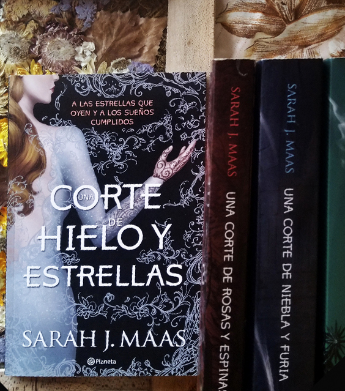

Mundo Libros
Todos los Libros
Fantasia
Romance
Ficcion
Misterio
Erotico
Sagas Completas
Sigueme en
Instagram
«Los Siete Maridos
de Evelyn Hugo»
Taylor Jenkins Reid
«Antes de Diciembre»
Joana Marcus
«Crave» - Anhelo
Tracy Wolff
«De sangre y Cenizas»
Jennifer Armentrout
«La Reina Roja»
Victoria Aveyard
Saga «Culpables»
Mercedes Ron
«Despues de Diciembre»
Joana Marcus
«No Apagues La Luz»
Yoselin Goncalves
«Pecados Placenteros» - Lascivia
Eva Muñoz
«The Dare»
Harley Laroux
«Una Corte de Rosas y Espinas»
Sarah J. Maas
«El Reino De Los Malditos»
Kerri Maniscalco
«Cadaver Exquisito»
Agustina Bazterrica
«Caraval»
Stephanie Garber
«La Espada De La Asesina»
Sarah J. Maas
It
Stephen King
Saga «After»
Anna Todd
«Tentacion»
J. Kenner
«Una Corte de Niebla y Furia»
Sarah J. Maas
«22-11-1963»
Stephen King
«El Imperio Final»
Brandon Sanderson
«El color de las cosas invisibles»
Andrea Longarela
«Una Corte de Alas y Ruina»
Sarah J Maas
«Alas de sangre»
Rebecca Yarros
«Di Que Serás Mía»
J.S. Scott
«El Libro de los Muertos»
Patricia Cornwell
«Carrie»
Stephen King

«Una Corte de Hielo y Estrellas»
Sarah J Maas


{kind=link}
{kind=link}
{kind=link}
{kind=link}
{kind=link}
{kind=link}
{kind=link}
{kind=link}
{kind=link}
{kind=link}
{kind=link}
{kind=link}
{kind=link}
{kind=link}
{kind=link}
{kind=link}
{kind=link}
{kind=link}
{kind=link}
{kind=link}
{kind=link}
{kind=link}
{kind=link}
{kind=link}
{kind=link}
{kind=link}
{kind=link}